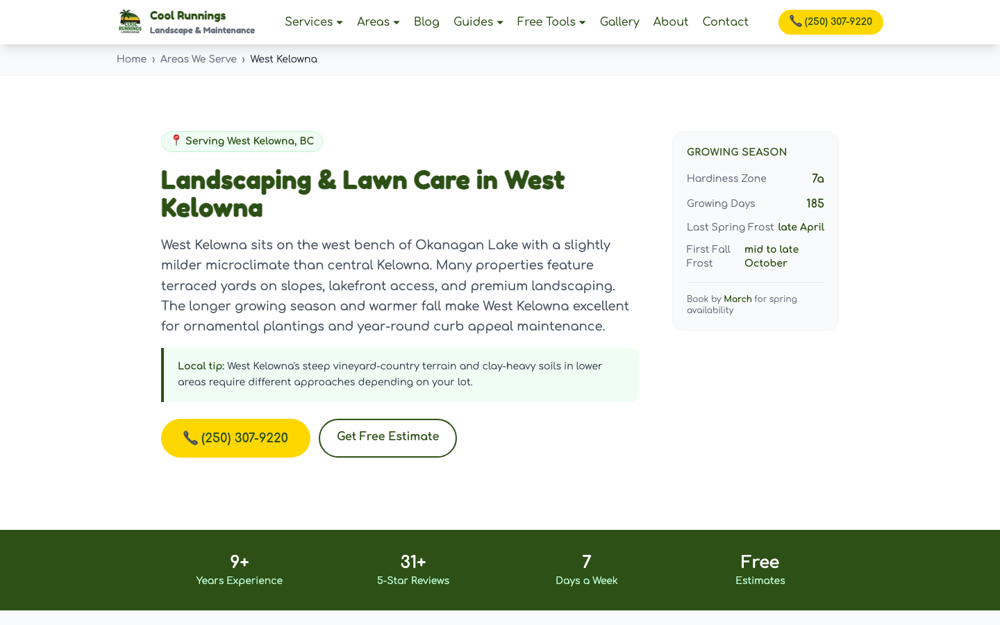
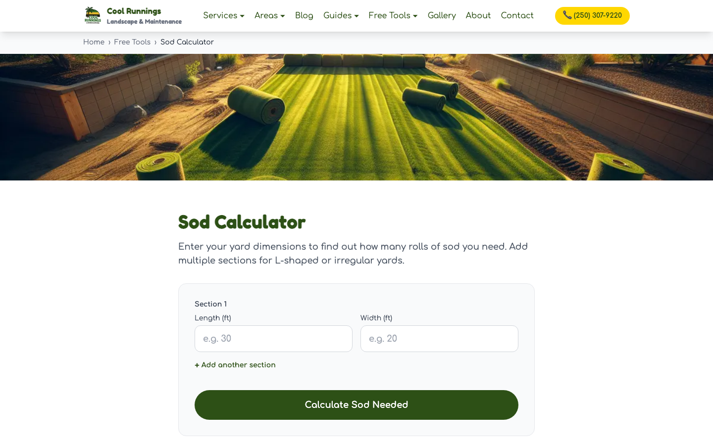

From no web presence to a local search magnet.
Cool Runnings already had strong word of mouth. I built the useful website and the system behind it: regional source data, local service pages, practical tools, and a feedback loop that measures what earns attention. A client-reported 30% increase in sales followed the launch.
A useful foundation began producing measurable demand.
The measurement layer refreshes from Google Search Console, Google Analytics 4, and DataForSEO ranking queries; the figures below show the latest verified 28-day snapshot.
The action total is a verified minimum until direct Google Business Profile Performance API reporting is connected. Google-origin sessions in Analytics are not the same as exact Business Profile attribution.
The site is the surface. The repeatable system is underneath.
Canonical business inputs stay separate from generated local enrichment. A deterministic renderer joins them, publishes connected pages, and makes performance measurable.
-
Start with source truth
Canonical cities and services
Six service areas carry weather, frost, planting-zone, neighbourhood, and regional context. Six services carry approved descriptions, inclusions, processes, FAQs, photos, and relationships.
cities.json + services.json -
Add local specificity
A structured enrichment matrix
Each city-service pair receives local challenges, soil and terrain notes, seasonal guidance, neighbourhood tips, FAQs, and keyword variants as structured JSON rather than loose page markup.
6 cities × 6 services = 36 records -
Protect the pipeline
Validation, retry, and recovery
Responses must parse and contain the required fields before they are written. Failed pairs retry; a recovery pass finds missing keys and merges only successful records.
validate → retry → recover → merge -
Ship connected pages
One renderer, useful discovery paths
The build joins canonical and enriched records, then adds canonical URLs, structured data, related hubs, sibling pages, useful resources, and sitemap discovery.
/services/[service]/[city]/ -
Build useful reasons to visit
Tools and a separate guide library
Cost guides, seasonal checklists, comparisons, frost information, and calculators answer practical local questions. The deterministic guide library remains separate from the AI-enriched service matrix.
66 structured guide records -
Close the loop
Live search and conversion evidence
A scheduled measurement layer pulls Search Console clicks and queries, Google Analytics engagement and actions, and DataForSEO ranking checks. That evidence identifies which pages and queries deserve the next SEO refinement.
measure → rank → refine → refresh
Useful work earns attention.
The strongest pages are not generic location swaps. They help someone decide when to water, what materials may cost, how much sod to order, or when frost is likely.
Open the sod calculator

Human review stays in the loop.
Automation handles structure, repetition, validation, and publishing. A person still reviews business claims, local usefulness, factual sense, tone, internal links, and whether a page deserves to exist.
- Canonical business facts remain the source of truth.
- Generated enrichment is constrained to structured fields.
- Pages must add meaningful local or practical value.
- Search and conversion data guide the next refinement.